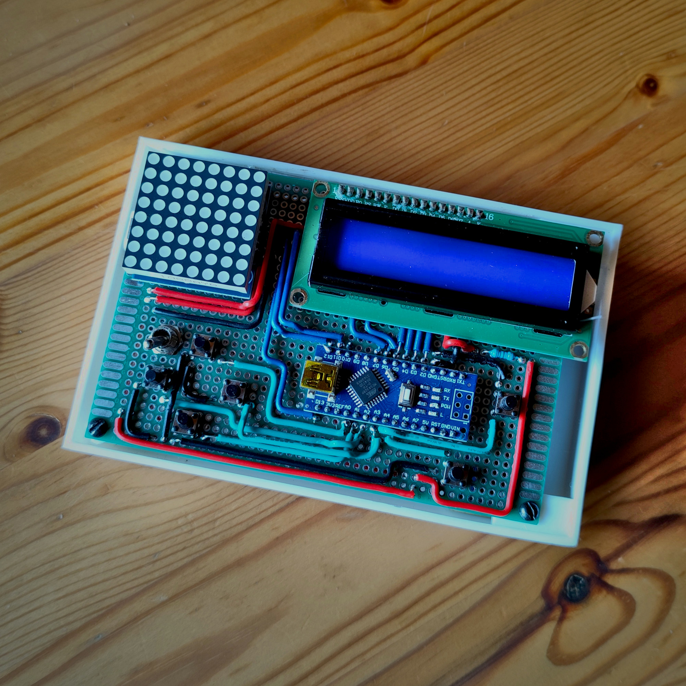
HSG/1 "Reinier"
December 2024A handcrafted board capable of basic speech synthesis via an Arduino and PWM.
Electronics
Modelling
HSG/1 "Reinier"
Introduction
Microcontrollers are tiny, very resource limited and cost effective computers that are really handy for small electronics projects. I have owned an Arduino prototype kit for quite a long time, but never had any great ideas for large projects, so I did not dedicate a lot of time to it.
A friend of mine that is into robotics and was getting into electronics got an Arduino for his birthday and started putting together some interesting projects with Nanos, most notably an hourglass-clock with two 8x8 LED matrices that simulated the sand, and a Hitachi HD44780 LCD screen for control. He modeled and built the whole thing and I helped with the clock code as I was more familiar with C than he was.
That build got me interested in learning more about microcontrollers and more specifically, making a large project with them.
Brainstorming
I wanted to make something that was fun and interactive from the get go, but I did not have any clear ideas yet.
It was bound to be a novelty or a toy of some sorts, so I first thought about making a GameBoy-like handheld videogame console. It was quickly discarded as making something entertaining and substantial with an Arduino (The only microcontroller that I was planning on using) is complicated because of it's hardware limitations.
The Arduino Nano is powered by the ATmega328 chip clocked at 16 MHz, which is not bad, but the 2KB of SRAM, 32KB of static Flash and 1KB of EEPROM memory are a serious limitation. More specifically, the 32KB of Flash memory shared between program code and data makes fitting a somewhat complex game challenging. It would require programming in AVR assembly for code optimization, sprite compression trickery and many other shenanigans that are beyond the scope of a small free time project, so no GameBoy.
Another somewhat similar gadget to a console but much simpler is the Tamagochi, which was pretty popular in the late 90s. I did not want to make a straight ripoff though, so I took inspiration from the design and basic concept of the Tamagochi: a portable pet that can be interacted with. I was researching voice synthesis hardware and software at the time, so I thought making it a Speak & Spell kind of toy would make sense and be very fitting for the project.
Design
First and foremost, I created a breadboard prototype with an Arduino Uno R3 and all the hardware that I wanted to include. The final board would have to fit an Arduino Nano, 6 buttons (4 direction buttons, a forward and a backwards button), a Hitachi HD44870 LCD screen for text display and a MAX7219 8x8 LED matrix to display some basic sprites, as well as the speaker and all the passive components required.
The distribution of components on the board would dictate how the case would look, so I experimented with a few different layouts. I would have loved a vertical layout but the largest perfboard I was able to source was 120x80mm and it was not possible to fit both displays, the Nano, and position the buttons so that they could be used comfortably.
I settled on the following horizontal layout:
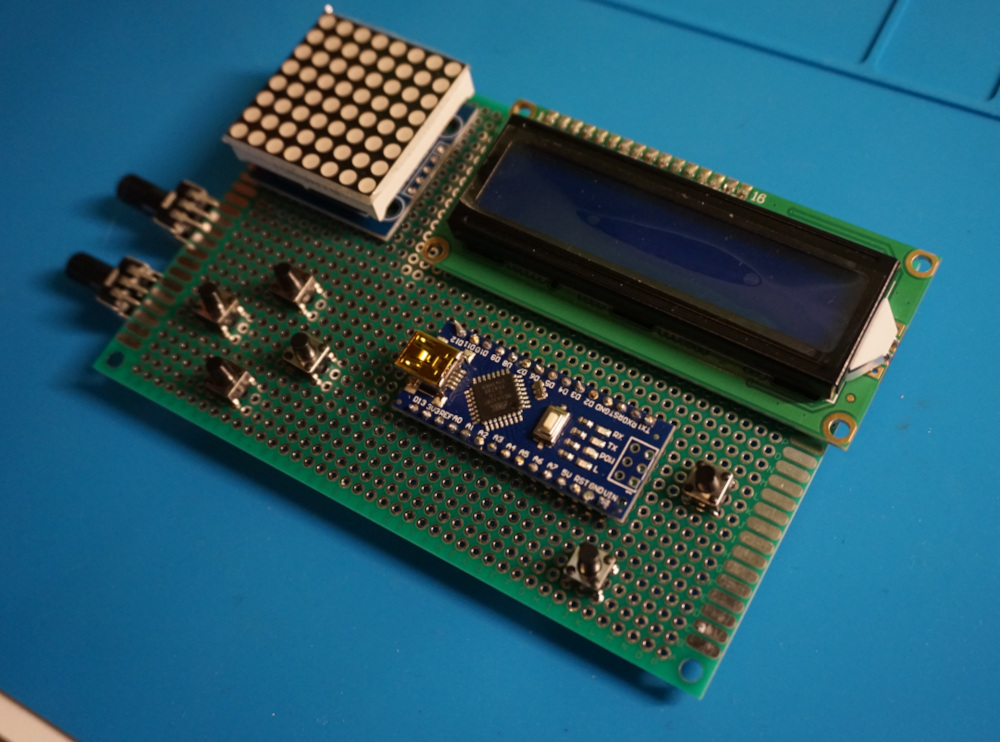
Notice the potentiometers, they were supposed to control the LCD's brightness and the volume, but I was running out of space on the board and I decided to scrap the idea. Instead, a fixed resistor that yielded a reasonable brightness is used and the volume is hardcoded in the firmware.
This is how the schematic looks with the two potentiometers in place:
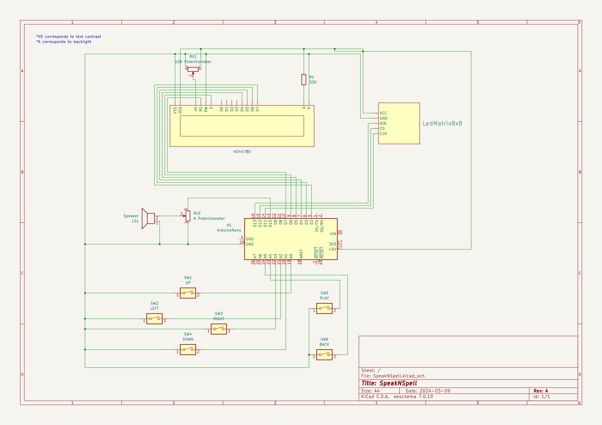
The board will have a power on switch that will feed 5V to the Arduino from a 3.7V 18650 Lithium battery. A T6845-C board will allow to charge the 3.7V battery with 5V from a micro USB port as well as boosting the battery voltage to 5V to power the Arduino Nano.
Bill of Materials
The following bill of materials corresponds to all the components that are required to build this project from scratch. It excludes tools and assumes that no materials are readily available and everything has to be bought. If a certain component is not available as a single unit and has to be bought in a pack, the price of the whole pack is used
| Item | Qty. | Price/Unit (EUR) | Total |
|---|---|---|---|
| Arduino Nano (1 Unit, USB-C) | 1 | 3,46 | 3,46 |
| 120x80mm Perfboard (1 Unit) | 1 | 4,48 | 4,48 |
| T6845-C (1 Unit, USB-C) | 1 | 1,21 | 1,21 |
| HD44780 LCD Screen (1 Unit) | 1 | 2,78 | 2,78 |
| MAX7219 8x8 LED Matrix (1 Unit) | 1 | 1,82 | 1,82 |
| SMD Switches (20 Units) | 1 | 1,00 | 1,00 |
| Toggle switch (10 Units, ON ON) | 1 | 2,67 | 2,67 |
| Resistor kit (300 Units) | 1 | 3,70 | 3,70 |
| M3 Bolt and nut set (480 Units) | 1 | 6,92 | 6,92 |
| 24/26 AWG solid core wire (5m) | 4 | 2,11 | 8,44 |
| 18650 3.7V 3500mAh battery (2 Units) | 1 | 10,38 | 10,38 |
| Total: | 46,86 |
The links are not the original ones I used, those have been lost to time. You could probably get a better deal on the perfboard and the Arduino, specially if you buy a larger lot of them. I have opted to include the modern USB-C equivalents. When I was shopping for parts, even though that USB-C was already well stablished, it was not as common.
This is the worst case BoM. If you have tinkered in some projects, you will most likely have some screws, resistors or other components laying around. I only had to buy the wire, the perfboard, the Arduino and the T6845-C. The batteries were sourced from an old laptop, the speakers from an old ebook and so on.
Implementation
Software
The software used by the board is handwritten, but relies on the standard libraries for controlling the LCD and LED matrix. Additionally, the TTS library by Clive Webster, Gabriel Pertrut and Stephen Crane is used to translate the text to rough speech. The Arduino Nano does not have great sound capabilities, but it can output PWM through certain analog pins. The TTS library exploits PWM to produce somewhat understandable phonemes.
The software has 3 menus:
- The preset menu has predefined sentences that can be played and modified.
- The type menu opens an empty screen that can be filled with up to 32 characters to form words.
- The faces menu changes the sprite displayed on the 8x8 LED matrix.
The characters at a given position on the type or preset menus can be scrolled with the up and down keys. The next or previous character can be selected with the right and left keys respectively.
All of the sprites, presets and strings are encoded on the main .ino file and loaded as data to the Flash memory. The rest of the code contains the menu, display and input logic.
There are some additional details and easter eggs on the code as well. The sprites on the 8x8 LED matrix show "Reinier", the mascot of this toy. It is inspired by the aforementioned Tamagochi. There is extra code to make it feel more alive by blinking periodically or opening his mouth when speech is being generated.
Modelling
Probably the most straightforward part of the whole process. I modelled a 3D case in Blender to fit a 120x80mm perfboard with some clearance on the back for all the pins and extra wiring that could not be fit on the front.
The model has 4 tabs on the sides to mount the PCB and a cylinder shaped protrusion on the back that will house the 18650 battery and will double as a simple stand when the device is resting on a table. There is no hole for the charger port or the power switch, as I was determined to fit them wherever it was the most convenient. I ended up drilling everything necessary at the end.
I did not get the supports completely correct (A common trend among my 3D prints) and had some overhang at the top of the case. I dremeled it down as well as some Z-Wobble on the backside.
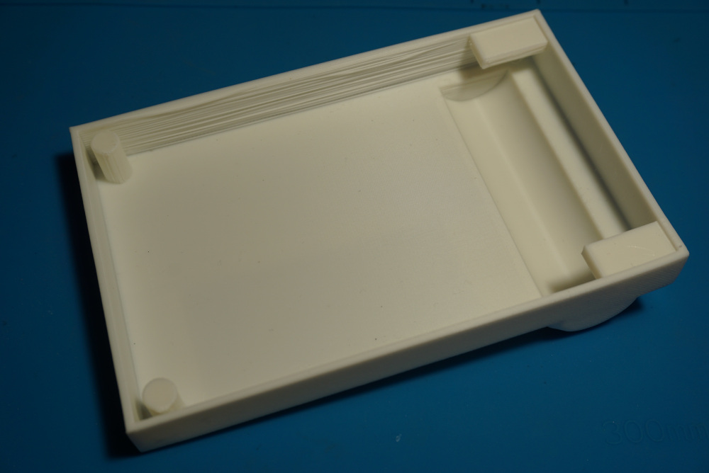
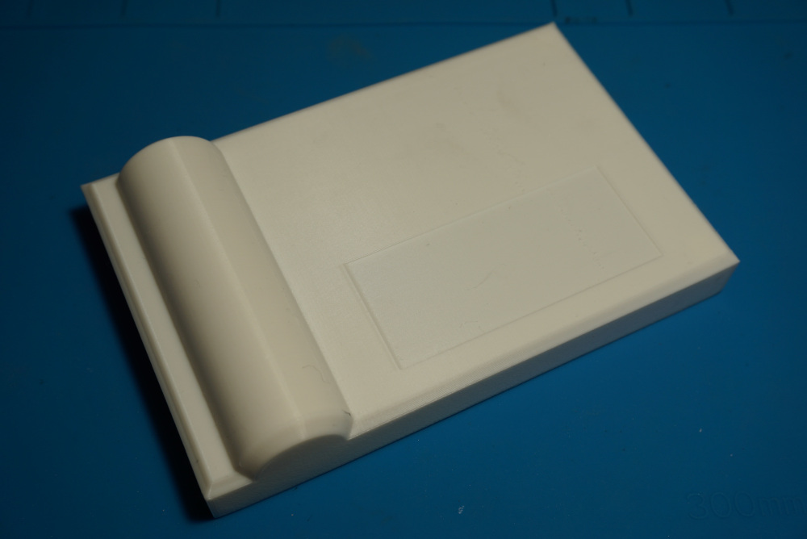
Wiring
As part of a design choice, I wanted to keep the wires and main components exposed. To make the project more aesthetically pleasing, I opted to route the cables using 90 degree bends (Inspired by albin.jd's work). This is possible because the wires are solid core and can be easily straightened and bent with a pair of needlenose pliers.
Most wirework is carried out at the top of the board, yet some had to go at the back, mostly simple jumpers to run power or ground to some hard to reach pins. I was able to run some cables below the LCD screen, making the back side less cramped.
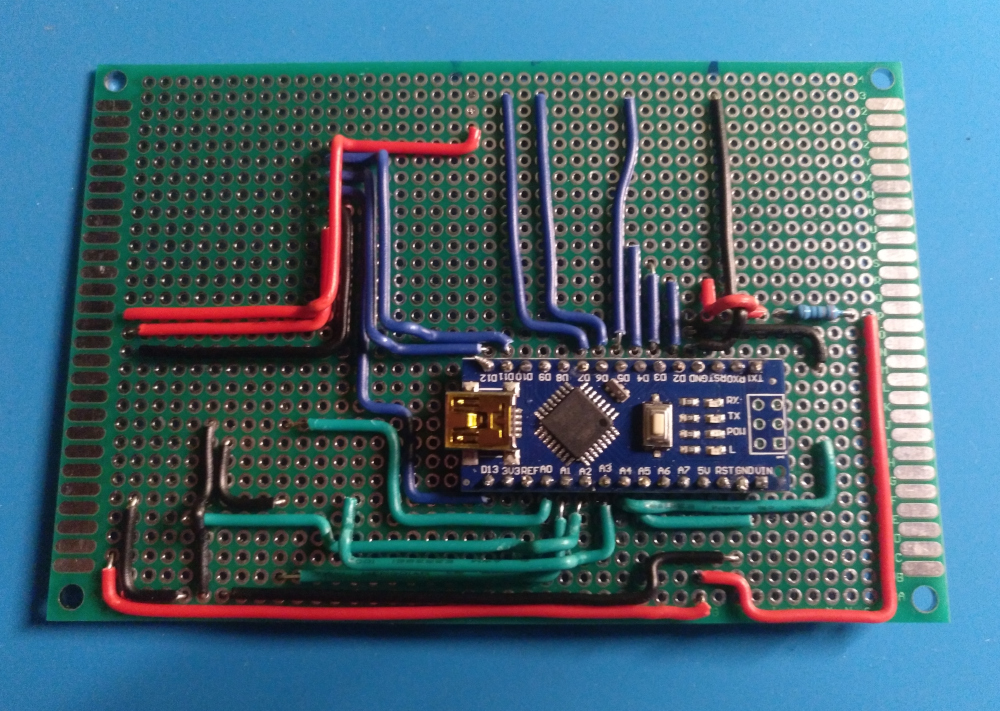
Initially, I thought about fitting the power button on the case itself but it did not look natural, as the shape of the switch poked both through the front and back of the case, the wires were visible, etc. I managed to drill a hole in the PCB large enough to fit the topmost part of the switch and the nut to hold it in place.
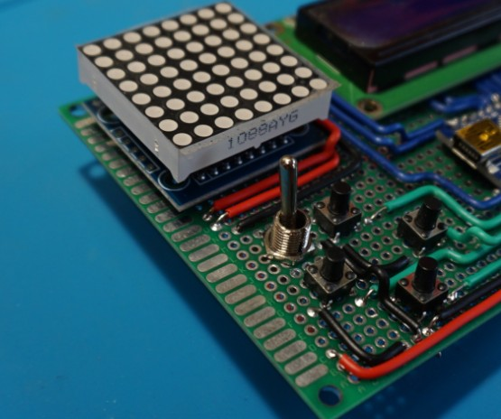
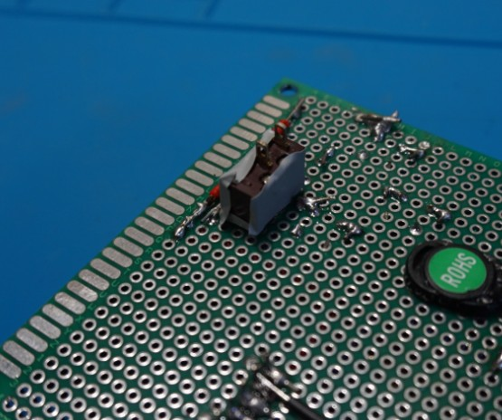
I removed the female USB-A connector on the T6845-C board to make it slimmer, soldered wires to it and drilled a hole on the left side of the case to mount the micro USB port for charging.
I soldered the Arduino Nano headers, the switches, the passive components and all the cables. The last components to be soldered to the board were the speaker, the displays and the power distribution components.
Final touches
The clearance between the up/right switches and the Nano's mini USB interface is just enough to plug a regular mini USB cable for programming. Once the device was programmed and some minor software bugs were fixed, the battery and charging board were hot glued to the case and the board was mounted with 3 screws. The 4th one was not reachable because of the position of LCD; it covered the top right hole, so the tab that was meant to thread a screw only serves as support to avoid the board being bent.
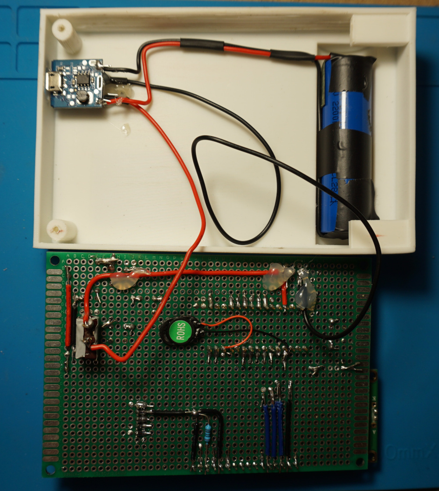
My sister was eager to help me with the final touches and drew a few sketches of Reinier. I printed a label with the information about the device and sticked it to the back:
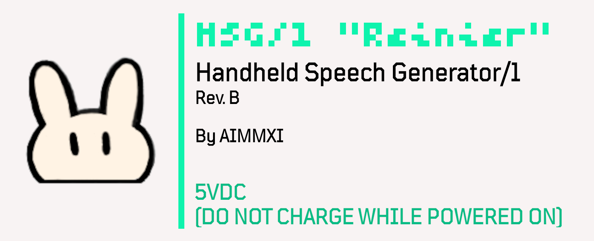
Results
With all the parts put together and screwed to the case, the final result looks as follows:
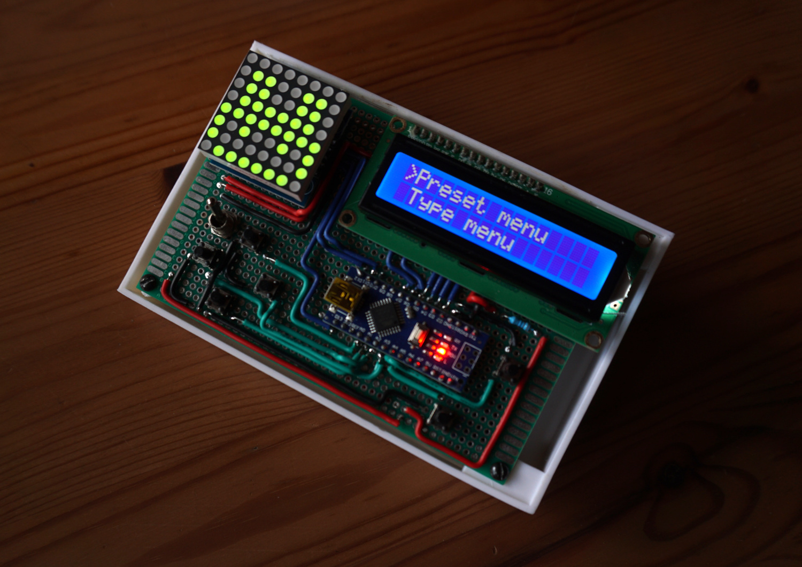
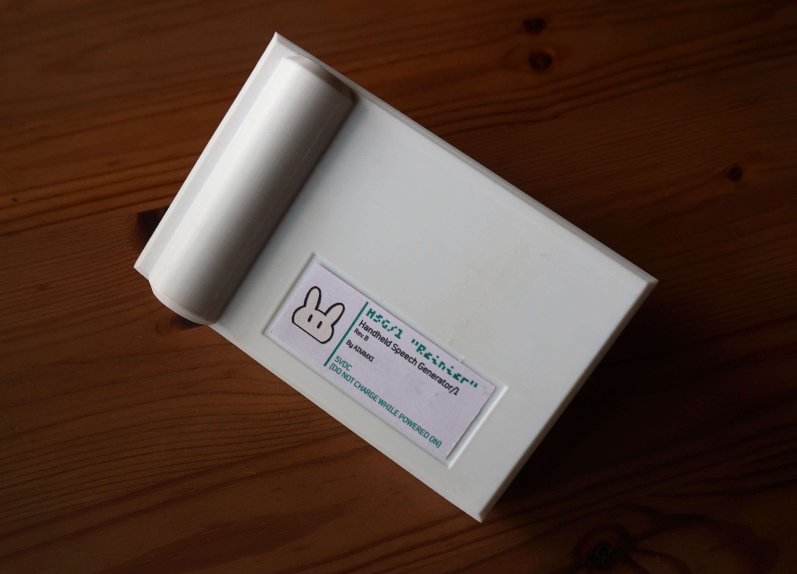
Links and files
The printable files, Arduino source code and KiCAD schematics (With additional symbols) can be downloaded from below:
Schematics: